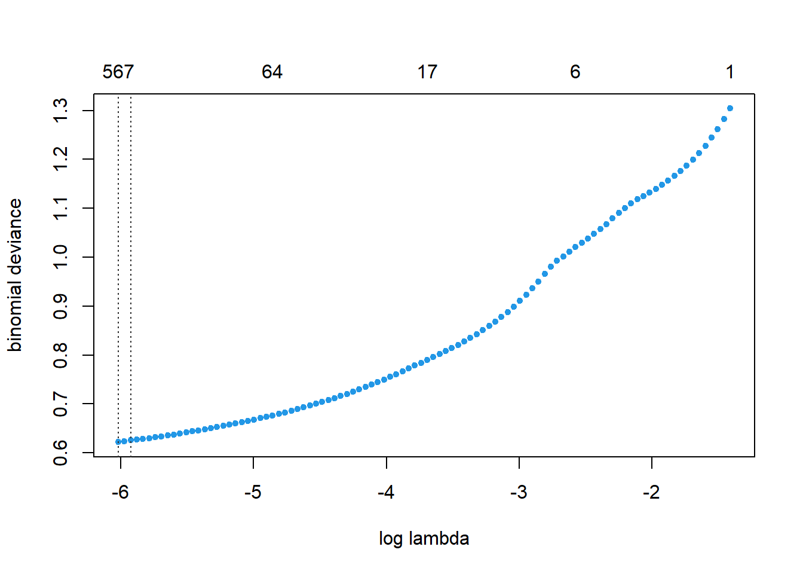

Capitulo 4 Modeling
En esta parte aplicaremos dos modelos: un Lasso-Logit y un XGboosting.
4.1 Cross-Validated LASSO-logit
Seestima un cross validated LASSO y se muestra el la gráfica de CV Binomial Deviance vs Complejidad
#CV LASSO
# se hacen 5 folds
cvlasso_a<-cv.gamlr(x = Xa, y = Ya, verb = T, family = 'binomial', nfold = 5)## Warning in gamlr(x, y, ...): numerically perfect fit for some observations.## fold 1,2,3,4,5,done.#Grafica
plot(cvlasso_a)
4.1.1 Grafica Lasso de los coeficientes vs la complejidad del modelo.
plot(cvlasso_a$gamlr)4.1.2 Hiper parametro
Automaticamente se elige el lambda que minimiza la devianza OOS.
# Identificador para el lambda deseado
# Valor del lambda deseado
#lambda resultante
a_lambda<- colnames(coef(cvlasso_a, select="min"))
cvlasso_a$gamlr$lambda[a_lambda]## seg100
## 0.002433614.1.3 Variables
A continuacion una tabla con los coeficientes que se selecciona para el CV LASSO. Que sorprendentemente solo fueron 561.
coefs<-coef(cvlasso_a, select="min", k=2, corrected=TRUE)
coefs<-as.data.frame(coefs[,1])
names(coefs)<-"valor"
coefs<-coefs %>% filter(valor !=0)
modelvariables<-row.names(coefs)
modelvariables## [1] "intercept" "lead_time"
## [3] "arrival_date_year2015" "arrival_date_year2017"
## [5] "arrival_date_monthDecember" "arrival_date_monthJune"
## [7] "arrival_date_week_number9" "arrival_date_week_number19"
## [9] "arrival_date_day_of_month22" "stays_in_weekend_nights"
## [11] "stays_in_week_nights" "adults"
## [13] "mealHB" "mealUndefined"
## [15] "countryAGO" "countryARE"
## [17] "countryAUT" "countryBEL"
## [19] "countryBGD" "countryBRA"
## [21] "countryCHN" "countryCPV"
## [23] "countryCYP" "countryDEU"
## [25] "countryESP" "countryFIN"
## [27] "countryFRA" "countryGAB"
## [29] "countryGBR" "countryGEO"
## [31] "countryGLP" "countryHKG"
## [33] "countryHND" "countryIDN"
## [35] "countryIRL" "countryITA"
## [37] "countryJEY" "countryJPN"
## [39] "countryKOR" "countryMAC"
## [41] "countryMAR" "countryMDV"
## [43] "countryNGA" "countryNLD"
## [45] "countryNOR" "countryPAK"
## [47] "countryPAN" "countryPOL"
## [49] "countryPRT" "countryQAT"
## [51] "countryRUS" "countrySAU"
## [53] "countrySEN" "countrySRB"
## [55] "countrySWE" "countryTJK"
## [57] "countryTUR" "countryZAF"
## [59] "market_segment8" "distribution_channel5"
## [61] "is_repeated_guest" "reserved_room_typeE"
## [63] "reserved_room_typeP" "assigned_room_typeB"
## [65] "assigned_room_typeI" "assigned_room_typeP"
## [67] "booking_changes" "deposit_typeB"
## [69] "agent10" "agent107"
## [71] "agent11" "agent110"
## [73] "agent118" "agent13"
## [75] "agent132" "agent134"
## [77] "agent14" "agent151"
## [79] "agent152" "agent155"
## [81] "agent157" "agent16"
## [83] "agent168" "agent17"
## [85] "agent191" "agent214"
## [87] "agent215" "agent22"
## [89] "agent220" "agent23"
## [91] "agent234" "agent240"
## [93] "agent241" "agent242"
## [95] "agent243" "agent251"
## [97] "agent26" "agent262"
## [99] "agent27" "agent281"
## [101] "agent288" "agent291"
## [103] "agent308" "agent314"
## [105] "agent315" "agent32"
## [107] "agent332" "agent341"
## [109] "agent359" "agent38"
## [111] "agent390" "agent40"
## [113] "agent410" "agent440"
## [115] "agent56" "agent6"
## [117] "agent63" "agent7"
## [119] "agent75" "agent8"
## [121] "agent86" "agent89"
## [123] "agent9" "agent94"
## [125] "company102" "company110"
## [127] "company112" "company153"
## [129] "company154" "company204"
## [131] "company218" "company242"
## [133] "company253" "company270"
## [135] "company277" "company309"
## [137] "company316" "company321"
## [139] "company350" "company38"
## [141] "company39" "company392"
## [143] "company40" "company405"
## [145] "company410" "company416"
## [147] "company461" "company470"
## [149] "company478" "company504"
## [151] "company51" "company68"
## [153] "company72" "company77"
## [155] "companyNULL" "customer_typeTransient"
## [157] "adr" "required_car_parking_spaces"
## [159] "total_of_special_requests" "dia_semmiercoles"
## [161] "dia_semviernes" "pascua_m1"
## [163] "agent_company107_NULL" "agent_company11_NULL"
## [165] "agent_company110_NULL" "agent_company118_NULL"
## [167] "agent_company13_NULL" "agent_company134_NULL"
## [169] "agent_company151_NULL" "agent_company152_NULL"
## [171] "agent_company155_NULL" "agent_company17_NULL"
## [173] "agent_company191_NULL" "agent_company21_NULL"
## [175] "agent_company214_NULL" "agent_company234_NULL"
## [177] "agent_company240_NULL" "agent_company242_NULL"
## [179] "agent_company262_NULL" "agent_company281_NULL"
## [181] "agent_company291_NULL" "agent_company314_NULL"
## [183] "agent_company315_NULL" "agent_company32_NULL"
## [185] "agent_company332_NULL" "agent_company341_NULL"
## [187] "agent_company38_NULL" "agent_company390_NULL"
## [189] "agent_company410_NULL" "agent_company440_NULL"
## [191] "agent_company56_NULL" "agent_company8_NULL"
## [193] "agent_company86_NULL" "agent_company9_NULL"
## [195] "agent_company94_NULL" "agent_companyNULL_102"
## [197] "agent_companyNULL_110" "agent_companyNULL_112"
## [199] "agent_companyNULL_153" "agent_companyNULL_204"
## [201] "agent_companyNULL_218" "agent_companyNULL_253"
## [203] "agent_companyNULL_270" "agent_companyNULL_277"
## [205] "agent_companyNULL_281" "agent_companyNULL_309"
## [207] "agent_companyNULL_316" "agent_companyNULL_321"
## [209] "agent_companyNULL_350" "agent_companyNULL_38"
## [211] "agent_companyNULL_392" "agent_companyNULL_416"
## [213] "agent_companyNULL_461" "agent_companyNULL_470"
## [215] "agent_companyNULL_478" "agent_companyNULL_68"
## [217] "agent_companyNULL_77" "singles_adults"
## [219] "dif_room" "weekmonthFebruary_9"
## [221] "weekmonthJune_27" "weekmonthMay_19"
## [223] "weekmonthNovember_49" "weekmonthSeptember_40"
## [225] "daymontApril_4" "daymontApril_5"
## [227] "daymontApril_6" "daymontAugust_18"
## [229] "daymontDecember_16" "daymontDecember_18"
## [231] "daymontDecember_3" "daymontDecember_5"
## [233] "daymontDecember_6" "daymontFebruary_8"
## [235] "daymontJuly_1" "daymontJuly_10"
## [237] "daymontJuly_15" "daymontJuly_16"
## [239] "daymontJuly_17" "daymontJuly_2"
## [241] "daymontJuly_23" "daymontJuly_27"
## [243] "daymontJuly_29" "daymontJuly_5"
## [245] "daymontJuly_7" "daymontJune_10"
## [247] "daymontJune_21" "daymontJune_26"
## [249] "daymontJune_8" "daymontMarch_29"
## [251] "daymontMay_15" "daymontMay_25"
## [253] "daymontMay_26" "daymontMay_27"
## [255] "daymontNovember_12" "daymontNovember_23"
## [257] "daymontNovember_28" "daymontOctober_12"
## [259] "daymontOctober_13" "daymontOctober_14"
## [261] "daymontOctober_22" "daymontOctober_25"
## [263] "daymontOctober_26" "daymontOctober_27"
## [265] "daymontOctober_8" "weekdaymonthApril_15_4"
## [267] "weekdaymonthApril_15_5" "weekdaymonthApril_15_6"
## [269] "weekdaymonthAugust_33_14" "weekdaymonthAugust_34_18"
## [271] "weekdaymonthAugust_35_29" "weekdaymonthDecember_49_3"
## [273] "weekdaymonthDecember_49_5" "weekdaymonthDecember_50_6"
## [275] "weekdaymonthDecember_51_16" "weekdaymonthDecember_53_26"
## [277] "weekdaymonthFebruary_10_28" "weekdaymonthFebruary_8_24"
## [279] "weekdaymonthJanuary_1_6" "weekdaymonthJanuary_2_6"
## [281] "weekdaymonthJuly_27_1" "weekdaymonthJuly_27_2"
## [283] "weekdaymonthJuly_27_3" "weekdaymonthJuly_28_11"
## [285] "weekdaymonthJuly_28_5" "weekdaymonthJuly_28_7"
## [287] "weekdaymonthJuly_29_15" "weekdaymonthJuly_29_16"
## [289] "weekdaymonthJuly_30_23" "weekdaymonthJuly_31_27"
## [291] "weekdaymonthJuly_31_29" "weekdaymonthJune_24_10"
## [293] "weekdaymonthJune_24_8" "weekdaymonthJune_26_21"
## [295] "weekdaymonthJune_27_26" "weekdaymonthMarch_11_10"
## [297] "weekdaymonthMarch_11_14" "weekdaymonthMarch_9_1"
## [299] "weekdaymonthMay_21_15" "weekdaymonthMay_22_25"
## [301] "weekdaymonthMay_22_26" "weekdaymonthMay_22_27"
## [303] "weekdaymonthNovember_46_12" "weekdaymonthNovember_48_20"
## [305] "weekdaymonthNovember_48_23" "weekdaymonthNovember_48_27"
## [307] "weekdaymonthNovember_49_27" "weekdaymonthNovember_49_28"
## [309] "weekdaymonthOctober_40_2" "weekdaymonthOctober_41_8"
## [311] "weekdaymonthOctober_41_9" "weekdaymonthOctober_42_12"
## [313] "weekdaymonthOctober_42_13" "weekdaymonthOctober_42_14"
## [315] "weekdaymonthOctober_42_17" "weekdaymonthOctober_42_9"
## [317] "weekdaymonthOctober_43_17" "weekdaymonthOctober_43_22"
## [319] "weekdaymonthOctober_43_23" "weekdaymonthOctober_44_25"
## [321] "weekdaymonthOctober_44_26" "weekdaymonthOctober_44_27"
## [323] "weekdaymonthSeptember_36_5" "weekdaymonthSeptember_37_4"
## [325] "month_diasemApril_lunes" "month_diasemDecember_lunes"
## [327] "month_diasemDecember_viernes" "month_diasemFebruary_sabado"
## [329] "month_diasemJuly_miercoles" "month_diasemMarch_domingo"
## [331] "month_diasemMay_jueves" "month_diasemOctober_sabado"
## [333] "week_diasem1_sabado" "week_diasem12_lunes"
## [335] "week_diasem15_lunes" "week_diasem15_martes"
## [337] "week_diasem15_miercoles" "week_diasem21_domingo"
## [339] "week_diasem22_jueves" "week_diasem22_miercoles"
## [341] "week_diasem22_viernes" "week_diasem24_miercoles"
## [343] "week_diasem24_viernes" "week_diasem26_martes"
## [345] "week_diasem27_domingo" "week_diasem27_miercoles"
## [347] "week_diasem28_sabado" "week_diasem29_sabado"
## [349] "week_diasem29_viernes" "week_diasem31_lunes"
## [351] "week_diasem31_viernes" "week_diasem33_sabado"
## [353] "week_diasem36_jueves" "week_diasem37_jueves"
## [355] "week_diasem38_martes" "week_diasem39_sabado"
## [357] "week_diasem40_sabado" "week_diasem41_martes"
## [359] "week_diasem44_domingo" "week_diasem45_sabado"
## [361] "week_diasem47_miercoles" "week_diasem48_viernes"
## [363] "week_diasem49_viernes" "week_diasem5_sabado"
## [365] "week_diasem5_viernes" "week_diasem51_viernes"
## [367] "tasa_canc" "market_dist3_TA_TO"
## [369] "market_dist8_5" "market_distOfflineTA_TO_TA_TO"
## [371] "cust_depostiTransient_B" "cust_segmentContract_7"
## [373] "cust_segmentTransient-Party_7" "cust_segmentTransient_7"
## [375] "lead_depositA_[ 16, 59)" "lead_depositA_[ 59,146)"
## [377] "lead_depositA_[146,737]" "lead_depositB_[ 59,146)"
## [379] "lead_week1_[ 59,146)" "lead_week1_[146,737]"
## [381] "lead_week10_[146,737]" "lead_week12_[ 59,146)"
## [383] "lead_week15_[ 16, 59)" "lead_week17_[146,737]"
## [385] "lead_week18_[ 59,146)" "lead_week2_[ 0, 16)"
## [387] "lead_week2_[ 16, 59)" "lead_week2_[ 59,146)"
## [389] "lead_week2_[146,737]" "lead_week21_[ 0, 16)"
## [391] "lead_week22_[ 59,146)" "lead_week22_[146,737]"
## [393] "lead_week24_[ 16, 59)" "lead_week24_[ 59,146)"
## [395] "lead_week29_[146,737]" "lead_week3_[ 0, 16)"
## [397] "lead_week3_[ 59,146)" "lead_week3_[146,737]"
## [399] "lead_week31_[ 16, 59)" "lead_week32_[ 0, 16)"
## [401] "lead_week32_[ 16, 59)" "lead_week32_[ 59,146)"
## [403] "lead_week34_[146,737]" "lead_week35_[ 16, 59)"
## [405] "lead_week37_[ 59,146)" "lead_week39_[ 59,146)"
## [407] "lead_week4_[146,737]" "lead_week40_[ 59,146)"
## [409] "lead_week42_[ 0, 16)" "lead_week42_[ 16, 59)"
## [411] "lead_week42_[ 59,146)" "lead_week43_[ 59,146)"
## [413] "lead_week44_[ 0, 16)" "lead_week44_[ 59,146)"
## [415] "lead_week44_[146,737]" "lead_week45_[ 16, 59)"
## [417] "lead_week45_[ 59,146)" "lead_week48_[ 0, 16)"
## [419] "lead_week48_[ 59,146)" "lead_week49_[ 59,146)"
## [421] "lead_week49_[146,737]" "lead_week5_[ 0, 16)"
## [423] "lead_week5_[ 59,146)" "lead_week50_[ 0, 16)"
## [425] "lead_week50_[ 16, 59)" "lead_week50_[ 59,146)"
## [427] "lead_week51_[146,737]" "lead_week52_[ 59,146)"
## [429] "lead_week52_[146,737]" "lead_week53_[146,737]"
## [431] "lead_week6_[ 0, 16)" "lead_week6_[ 59,146)"
## [433] "lead_week6_[146,737]" "lead_week8_[ 0, 16)"
## [435] "lead_week8_[146,737]" "lead_week9_[ 0, 16)"
## [437] "meal_reservFB_A" "meal_reservHB_G"
## [439] "meal_reservSC_A" "meal_reservSC_D"
## [441] "meal_reservSC_F" "meal_reservSC_G"
## [443] "meal_reservSC_P" "meal_reservUndefined_D"
## [445] "country_monthAGO_December" "country_monthAGO_February"
## [447] "country_monthAND_January" "country_monthARE_January"
## [449] "country_monthAUS_April" "country_monthAUS_February"
## [451] "country_monthAUS_January" "country_monthAUT_July"
## [453] "country_monthAUT_March" "country_monthAUT_October"
## [455] "country_monthBEL_August" "country_monthBEL_July"
## [457] "country_monthBEL_October" "country_monthBGR_May"
## [459] "country_monthBLR_January" "country_monthBRA_April"
## [461] "country_monthCHE_July" "country_monthCHE_March"
## [463] "country_monthCHL_April" "country_monthCHL_December"
## [465] "country_monthCHN_July" "country_monthCHN_October"
## [467] "country_monthCOL_November" "country_monthCOL_September"
## [469] "country_monthCYP_August" "country_monthCYP_May"
## [471] "country_monthCZE_August" "country_monthCZE_July"
## [473] "country_monthCZE_October" "country_monthDEU_April"
## [475] "country_monthDEU_December" "country_monthDEU_October"
## [477] "country_monthEGY_February" "country_monthEGY_March"
## [479] "country_monthEGY_November" "country_monthESP_April"
## [481] "country_monthESP_December" "country_monthESP_July"
## [483] "country_monthESP_June" "country_monthFRA_April"
## [485] "country_monthFRA_January" "country_monthFRA_June"
## [487] "country_monthFRA_March" "country_monthFRA_May"
## [489] "country_monthFRA_November" "country_monthFRA_September"
## [491] "country_monthGAB_September" "country_monthGBR_June"
## [493] "country_monthGBR_May" "country_monthGBR_November"
## [495] "country_monthGBR_October" "country_monthGEO_March"
## [497] "country_monthGIB_August" "country_monthGIB_March"
## [499] "country_monthHND_February" "country_monthHRV_March"
## [501] "country_monthHUN_August" "country_monthHUN_November"
## [503] "country_monthIRL_July" "country_monthIRL_June"
## [505] "country_monthIRL_May" "country_monthIRL_October"
## [507] "country_monthIRN_February" "country_monthIRN_March"
## [509] "country_monthIRN_October" "country_monthISR_July"
## [511] "country_monthITA_April" "country_monthITA_July"
## [513] "country_monthJPN_December" "country_monthKAZ_January"
## [515] "country_monthKAZ_July" "country_monthKEN_March"
## [517] "country_monthKOR_June" "country_monthKWT_December"
## [519] "country_monthLBN_August" "country_monthLUX_December"
## [521] "country_monthLUX_February" "country_monthLUX_November"
## [523] "country_monthLUX_October" "country_monthMAR_August"
## [525] "country_monthMAR_December" "country_monthMAR_February"
## [527] "country_monthMDV_November" "country_monthMLT_August"
## [529] "country_monthMOZ_June" "country_monthMYS_December"
## [531] "country_monthNGA_March" "country_monthNLD_February"
## [533] "country_monthNOR_July" "country_monthOMN_January"
## [535] "country_monthPER_March" "country_monthPER_November"
## [537] "country_monthPRT_August" "country_monthPRT_January"
## [539] "country_monthPRT_May" "country_monthPRT_November"
## [541] "country_monthPRT_October" "country_monthPRT_September"
## [543] "country_monthQAT_April" "country_monthQAT_June"
## [545] "country_monthROU_February" "country_monthRUS_March"
## [547] "country_monthSAU_February" "country_monthSGP_January"
## [549] "country_monthSVK_August" "country_monthSVN_March"
## [551] "country_monthSWE_December" "country_monthSWE_February"
## [553] "country_monthSWE_March" "country_monthSWE_September"
## [555] "country_monthTHA_February" "country_monthTHA_October"
## [557] "country_monthTJK_May" "country_monthTMP_December"
## [559] "country_monthTUN_March" "country_monthTUR_February"
## [561] "country_monthTUR_January" "country_monthTUR_July"
## [563] "country_monthTZA_September" "country_monthVEN_January"
## [565] "country_monthVEN_September" "country_monthZAF_October"
## [567] "country_monthZMB_April"4.1.4 LOG LOSS test OOS
Ahora pruebo el error log loss del lasso
#Predicciones
lasso_score <- predict(cvlasso_a,
newdata = Xb,
type="response",
select = "min" )
#dataframe
lasso_validation <- data.frame(y, lasso_score)
colnames(lasso_validation)[2] <- c('lasso_score')
library(MLmetrics)##
## Attaching package: 'MLmetrics'## The following object is masked from 'package:base':
##
## RecallLogLoss(lasso_validation$lasso_score,lasso_validation$y)## [1] 0.307977Nos dio un error sorprendetemente muy pequeño. Con este modelo logramos realizar un error de 0.41872 y 0.42131 en los datos de test de Kaggle.
4.2 XGBOOSTING
Sin embargo, para ganar el concurso optamos por explorar otros modelos que generalmente tienen mayor potencial de ganar este tipo de concursos: XG boosting.
En este caso, se eligieron los hiperparametros mediante un tuning manual explorando el comportamiento del error cuando se fijaban todos los hp excepto uno. De esta manera se fijo la profunidad máxima del arbol en 6 y el learning rate en .06.
Debido a la alta cantidad de variables de las bases de datos (y pues que muchas son poco informativas) el colsample por cada arbol generado es alto: del 70%. De haber tenido solo variables muy informativas pues bajariamos ese porcentaje, sin embargo quicimos explitar la capacidad del modelo de seleccionar por si solo las variables.
# Preparar la base de entrenamiento
library(xgboost)## Warning: package 'xgboost' was built under R version 4.1.2##
## Attaching package: 'xgboost'## The following object is masked from 'package:plotly':
##
## slice## The following object is masked from 'package:dplyr':
##
## slicedtrain <- xgb.DMatrix(Xa, label = Ya)
# Label es el target
# Preparar la base de validación
dtest <- xgb.DMatrix(Xb, label = y)
watchlist <- list(train = dtrain, eval = dtest)
# Para evaluar el performance del modelo
# Entrenamiento del modelo
param <- list(max_depth = 6, learning_rate = 0.06,
objective = "binary:logistic",
eval_metric = "logloss", subsample = 0.6, colsample_bytree = 0.7)
xgb_model <- xgb.train(params = param, dtrain,
early_stopping_rounds = 10,
nrounds = 300,
watchlist)## [1] train-logloss:0.663222 eval-logloss:0.662965
## Multiple eval metrics are present. Will use eval_logloss for early stopping.
## Will train until eval_logloss hasn't improved in 10 rounds.
##
## [2] train-logloss:0.634519 eval-logloss:0.634210
## [3] train-logloss:0.609105 eval-logloss:0.608792
## [4] train-logloss:0.585925 eval-logloss:0.585632
## [5] train-logloss:0.566846 eval-logloss:0.566520
## [6] train-logloss:0.547866 eval-logloss:0.547613
## [7] train-logloss:0.531196 eval-logloss:0.530953
## [8] train-logloss:0.514483 eval-logloss:0.514309
## [9] train-logloss:0.500674 eval-logloss:0.500550
## [10] train-logloss:0.488633 eval-logloss:0.488497
## [11] train-logloss:0.479041 eval-logloss:0.478889
## [12] train-logloss:0.466199 eval-logloss:0.466273
## [13] train-logloss:0.455235 eval-logloss:0.455273
## [14] train-logloss:0.444384 eval-logloss:0.444325
## [15] train-logloss:0.434323 eval-logloss:0.434283
## [16] train-logloss:0.425645 eval-logloss:0.425530
## [17] train-logloss:0.417293 eval-logloss:0.417227
## [18] train-logloss:0.410248 eval-logloss:0.410186
## [19] train-logloss:0.402595 eval-logloss:0.402522
## [20] train-logloss:0.395693 eval-logloss:0.395637
## [21] train-logloss:0.389155 eval-logloss:0.389095
## [22] train-logloss:0.383109 eval-logloss:0.383009
## [23] train-logloss:0.377561 eval-logloss:0.377454
## [24] train-logloss:0.372889 eval-logloss:0.372789
## [25] train-logloss:0.368388 eval-logloss:0.368239
## [26] train-logloss:0.364201 eval-logloss:0.364095
## [27] train-logloss:0.360773 eval-logloss:0.360646
## [28] train-logloss:0.357228 eval-logloss:0.357109
## [29] train-logloss:0.353985 eval-logloss:0.353856
## [30] train-logloss:0.350971 eval-logloss:0.350842
## [31] train-logloss:0.348278 eval-logloss:0.348216
## [32] train-logloss:0.344813 eval-logloss:0.344815
## [33] train-logloss:0.342739 eval-logloss:0.342785
## [34] train-logloss:0.340321 eval-logloss:0.340383
## [35] train-logloss:0.337858 eval-logloss:0.337944
## [36] train-logloss:0.335790 eval-logloss:0.335880
## [37] train-logloss:0.333549 eval-logloss:0.333720
## [38] train-logloss:0.331315 eval-logloss:0.331577
## [39] train-logloss:0.328867 eval-logloss:0.329153
## [40] train-logloss:0.326044 eval-logloss:0.326437
## [41] train-logloss:0.323937 eval-logloss:0.324386
## [42] train-logloss:0.322231 eval-logloss:0.322730
## [43] train-logloss:0.320210 eval-logloss:0.320683
## [44] train-logloss:0.317851 eval-logloss:0.318520
## [45] train-logloss:0.316094 eval-logloss:0.316837
## [46] train-logloss:0.314676 eval-logloss:0.315437
## [47] train-logloss:0.313541 eval-logloss:0.314292
## [48] train-logloss:0.312309 eval-logloss:0.313026
## [49] train-logloss:0.310844 eval-logloss:0.311632
## [50] train-logloss:0.308857 eval-logloss:0.309670
## [51] train-logloss:0.307746 eval-logloss:0.308592
## [52] train-logloss:0.306746 eval-logloss:0.307586
## [53] train-logloss:0.305816 eval-logloss:0.306667
## [54] train-logloss:0.304803 eval-logloss:0.305653
## [55] train-logloss:0.303540 eval-logloss:0.304482
## [56] train-logloss:0.302516 eval-logloss:0.303542
## [57] train-logloss:0.301271 eval-logloss:0.302368
## [58] train-logloss:0.300415 eval-logloss:0.301540
## [59] train-logloss:0.298242 eval-logloss:0.299466
## [60] train-logloss:0.297357 eval-logloss:0.298655
## [61] train-logloss:0.295451 eval-logloss:0.296791
## [62] train-logloss:0.294890 eval-logloss:0.296236
## [63] train-logloss:0.294277 eval-logloss:0.295646
## [64] train-logloss:0.293508 eval-logloss:0.294877
## [65] train-logloss:0.291941 eval-logloss:0.293413
## [66] train-logloss:0.290419 eval-logloss:0.291974
## [67] train-logloss:0.289630 eval-logloss:0.291245
## [68] train-logloss:0.289161 eval-logloss:0.290767
## [69] train-logloss:0.288363 eval-logloss:0.289978
## [70] train-logloss:0.287609 eval-logloss:0.289273
## [71] train-logloss:0.287048 eval-logloss:0.288743
## [72] train-logloss:0.286103 eval-logloss:0.287872
## [73] train-logloss:0.284976 eval-logloss:0.286776
## [74] train-logloss:0.284490 eval-logloss:0.286322
## [75] train-logloss:0.284074 eval-logloss:0.285973
## [76] train-logloss:0.283231 eval-logloss:0.285190
## [77] train-logloss:0.282669 eval-logloss:0.284668
## [78] train-logloss:0.281071 eval-logloss:0.283244
## [79] train-logloss:0.280655 eval-logloss:0.282900
## [80] train-logloss:0.279644 eval-logloss:0.281914
## [81] train-logloss:0.279367 eval-logloss:0.281691
## [82] train-logloss:0.279010 eval-logloss:0.281362
## [83] train-logloss:0.278649 eval-logloss:0.281034
## [84] train-logloss:0.278323 eval-logloss:0.280733
## [85] train-logloss:0.278069 eval-logloss:0.280463
## [86] train-logloss:0.276995 eval-logloss:0.279558
## [87] train-logloss:0.276606 eval-logloss:0.279208
## [88] train-logloss:0.276111 eval-logloss:0.278831
## [89] train-logloss:0.275657 eval-logloss:0.278398
## [90] train-logloss:0.275263 eval-logloss:0.278062
## [91] train-logloss:0.274939 eval-logloss:0.277815
## [92] train-logloss:0.274422 eval-logloss:0.277325
## [93] train-logloss:0.273725 eval-logloss:0.276732
## [94] train-logloss:0.273171 eval-logloss:0.276249
## [95] train-logloss:0.272901 eval-logloss:0.276002
## [96] train-logloss:0.272569 eval-logloss:0.275700
## [97] train-logloss:0.272104 eval-logloss:0.275275
## [98] train-logloss:0.271863 eval-logloss:0.275099
## [99] train-logloss:0.271468 eval-logloss:0.274776
## [100] train-logloss:0.271201 eval-logloss:0.274554
## [101] train-logloss:0.270736 eval-logloss:0.274146
## [102] train-logloss:0.270378 eval-logloss:0.273832
## [103] train-logloss:0.270141 eval-logloss:0.273646
## [104] train-logloss:0.269385 eval-logloss:0.273042
## [105] train-logloss:0.269155 eval-logloss:0.272826
## [106] train-logloss:0.268807 eval-logloss:0.272559
## [107] train-logloss:0.268504 eval-logloss:0.272288
## [108] train-logloss:0.268036 eval-logloss:0.271872
## [109] train-logloss:0.267784 eval-logloss:0.271637
## [110] train-logloss:0.267582 eval-logloss:0.271513
## [111] train-logloss:0.267223 eval-logloss:0.271168
## [112] train-logloss:0.266754 eval-logloss:0.270810
## [113] train-logloss:0.265659 eval-logloss:0.269888
## [114] train-logloss:0.265202 eval-logloss:0.269495
## [115] train-logloss:0.264880 eval-logloss:0.269336
## [116] train-logloss:0.263929 eval-logloss:0.268461
## [117] train-logloss:0.263376 eval-logloss:0.267949
## [118] train-logloss:0.263250 eval-logloss:0.267829
## [119] train-logloss:0.262907 eval-logloss:0.267577
## [120] train-logloss:0.262734 eval-logloss:0.267405
## [121] train-logloss:0.262587 eval-logloss:0.267291
## [122] train-logloss:0.262081 eval-logloss:0.266832
## [123] train-logloss:0.261948 eval-logloss:0.266754
## [124] train-logloss:0.261383 eval-logloss:0.266325
## [125] train-logloss:0.261174 eval-logloss:0.266142
## [126] train-logloss:0.261013 eval-logloss:0.266026
## [127] train-logloss:0.260847 eval-logloss:0.265866
## [128] train-logloss:0.260674 eval-logloss:0.265741
## [129] train-logloss:0.260310 eval-logloss:0.265411
## [130] train-logloss:0.260167 eval-logloss:0.265288
## [131] train-logloss:0.259570 eval-logloss:0.264835
## [132] train-logloss:0.258900 eval-logloss:0.264244
## [133] train-logloss:0.258648 eval-logloss:0.264080
## [134] train-logloss:0.258419 eval-logloss:0.263875
## [135] train-logloss:0.258258 eval-logloss:0.263755
## [136] train-logloss:0.257913 eval-logloss:0.263464
## [137] train-logloss:0.257753 eval-logloss:0.263378
## [138] train-logloss:0.257609 eval-logloss:0.263227
## [139] train-logloss:0.257371 eval-logloss:0.263024
## [140] train-logloss:0.257222 eval-logloss:0.262941
## [141] train-logloss:0.256982 eval-logloss:0.262763
## [142] train-logloss:0.256702 eval-logloss:0.262522
## [143] train-logloss:0.256548 eval-logloss:0.262415
## [144] train-logloss:0.256218 eval-logloss:0.262162
## [145] train-logloss:0.255991 eval-logloss:0.262003
## [146] train-logloss:0.255836 eval-logloss:0.261923
## [147] train-logloss:0.255702 eval-logloss:0.261854
## [148] train-logloss:0.255568 eval-logloss:0.261730
## [149] train-logloss:0.255427 eval-logloss:0.261632
## [150] train-logloss:0.255240 eval-logloss:0.261564
## [151] train-logloss:0.255007 eval-logloss:0.261414
## [152] train-logloss:0.254807 eval-logloss:0.261299
## [153] train-logloss:0.254369 eval-logloss:0.260990
## [154] train-logloss:0.254229 eval-logloss:0.260896
## [155] train-logloss:0.254123 eval-logloss:0.260816
## [156] train-logloss:0.253849 eval-logloss:0.260645
## [157] train-logloss:0.253522 eval-logloss:0.260359
## [158] train-logloss:0.253416 eval-logloss:0.260259
## [159] train-logloss:0.253255 eval-logloss:0.260145
## [160] train-logloss:0.253131 eval-logloss:0.260043
## [161] train-logloss:0.253009 eval-logloss:0.259956
## [162] train-logloss:0.252886 eval-logloss:0.259892
## [163] train-logloss:0.252698 eval-logloss:0.259786
## [164] train-logloss:0.252546 eval-logloss:0.259666
## [165] train-logloss:0.252319 eval-logloss:0.259546
## [166] train-logloss:0.252187 eval-logloss:0.259466
## [167] train-logloss:0.252069 eval-logloss:0.259399
## [168] train-logloss:0.251327 eval-logloss:0.258765
## [169] train-logloss:0.251237 eval-logloss:0.258689
## [170] train-logloss:0.251162 eval-logloss:0.258648
## [171] train-logloss:0.250991 eval-logloss:0.258525
## [172] train-logloss:0.250804 eval-logloss:0.258382
## [173] train-logloss:0.250668 eval-logloss:0.258288
## [174] train-logloss:0.250386 eval-logloss:0.257996
## [175] train-logloss:0.250283 eval-logloss:0.257935
## [176] train-logloss:0.250172 eval-logloss:0.257861
## [177] train-logloss:0.250042 eval-logloss:0.257808
## [178] train-logloss:0.249833 eval-logloss:0.257620
## [179] train-logloss:0.249700 eval-logloss:0.257530
## [180] train-logloss:0.249567 eval-logloss:0.257509
## [181] train-logloss:0.249463 eval-logloss:0.257460
## [182] train-logloss:0.249361 eval-logloss:0.257378
## [183] train-logloss:0.249179 eval-logloss:0.257271
## [184] train-logloss:0.249083 eval-logloss:0.257201
## [185] train-logloss:0.248957 eval-logloss:0.257123
## [186] train-logloss:0.248771 eval-logloss:0.257028
## [187] train-logloss:0.248655 eval-logloss:0.256988
## [188] train-logloss:0.248396 eval-logloss:0.256756
## [189] train-logloss:0.248247 eval-logloss:0.256700
## [190] train-logloss:0.248175 eval-logloss:0.256695
## [191] train-logloss:0.248073 eval-logloss:0.256616
## [192] train-logloss:0.247965 eval-logloss:0.256548
## [193] train-logloss:0.247839 eval-logloss:0.256465
## [194] train-logloss:0.247612 eval-logloss:0.256296
## [195] train-logloss:0.247522 eval-logloss:0.256242
## [196] train-logloss:0.247448 eval-logloss:0.256199
## [197] train-logloss:0.247193 eval-logloss:0.255968
## [198] train-logloss:0.247062 eval-logloss:0.255877
## [199] train-logloss:0.246904 eval-logloss:0.255823
## [200] train-logloss:0.246775 eval-logloss:0.255723
## [201] train-logloss:0.246563 eval-logloss:0.255599
## [202] train-logloss:0.246364 eval-logloss:0.255498
## [203] train-logloss:0.246249 eval-logloss:0.255479
## [204] train-logloss:0.245498 eval-logloss:0.254797
## [205] train-logloss:0.245399 eval-logloss:0.254740
## [206] train-logloss:0.245328 eval-logloss:0.254704
## [207] train-logloss:0.245207 eval-logloss:0.254586
## [208] train-logloss:0.245106 eval-logloss:0.254506
## [209] train-logloss:0.245025 eval-logloss:0.254451
## [210] train-logloss:0.244919 eval-logloss:0.254374
## [211] train-logloss:0.244858 eval-logloss:0.254332
## [212] train-logloss:0.244543 eval-logloss:0.254083
## [213] train-logloss:0.244297 eval-logloss:0.253880
## [214] train-logloss:0.244149 eval-logloss:0.253764
## [215] train-logloss:0.244068 eval-logloss:0.253737
## [216] train-logloss:0.243980 eval-logloss:0.253655
## [217] train-logloss:0.243871 eval-logloss:0.253604
## [218] train-logloss:0.243725 eval-logloss:0.253508
## [219] train-logloss:0.243501 eval-logloss:0.253382
## [220] train-logloss:0.243409 eval-logloss:0.253283
## [221] train-logloss:0.243292 eval-logloss:0.253190
## [222] train-logloss:0.243207 eval-logloss:0.253117
## [223] train-logloss:0.243135 eval-logloss:0.253056
## [224] train-logloss:0.242859 eval-logloss:0.252884
## [225] train-logloss:0.242725 eval-logloss:0.252752
## [226] train-logloss:0.242648 eval-logloss:0.252732
## [227] train-logloss:0.242443 eval-logloss:0.252562
## [228] train-logloss:0.242372 eval-logloss:0.252536
## [229] train-logloss:0.242296 eval-logloss:0.252478
## [230] train-logloss:0.242179 eval-logloss:0.252390
## [231] train-logloss:0.242088 eval-logloss:0.252274
## [232] train-logloss:0.241883 eval-logloss:0.252141
## [233] train-logloss:0.241801 eval-logloss:0.252104
## [234] train-logloss:0.241717 eval-logloss:0.252067
## [235] train-logloss:0.241645 eval-logloss:0.252013
## [236] train-logloss:0.241537 eval-logloss:0.251924
## [237] train-logloss:0.241460 eval-logloss:0.251891
## [238] train-logloss:0.241360 eval-logloss:0.251865
## [239] train-logloss:0.241252 eval-logloss:0.251837
## [240] train-logloss:0.241183 eval-logloss:0.251800
## [241] train-logloss:0.241077 eval-logloss:0.251739
## [242] train-logloss:0.240986 eval-logloss:0.251660
## [243] train-logloss:0.240920 eval-logloss:0.251608
## [244] train-logloss:0.240817 eval-logloss:0.251555
## [245] train-logloss:0.240740 eval-logloss:0.251512
## [246] train-logloss:0.240578 eval-logloss:0.251413
## [247] train-logloss:0.240356 eval-logloss:0.251249
## [248] train-logloss:0.240265 eval-logloss:0.251222
## [249] train-logloss:0.240195 eval-logloss:0.251218
## [250] train-logloss:0.240089 eval-logloss:0.251162
## [251] train-logloss:0.239816 eval-logloss:0.250950
## [252] train-logloss:0.239736 eval-logloss:0.250933
## [253] train-logloss:0.239674 eval-logloss:0.250915
## [254] train-logloss:0.239522 eval-logloss:0.250830
## [255] train-logloss:0.239421 eval-logloss:0.250732
## [256] train-logloss:0.239336 eval-logloss:0.250682
## [257] train-logloss:0.239117 eval-logloss:0.250541
## [258] train-logloss:0.238919 eval-logloss:0.250460
## [259] train-logloss:0.238814 eval-logloss:0.250370
## [260] train-logloss:0.238725 eval-logloss:0.250334
## [261] train-logloss:0.238647 eval-logloss:0.250306
## [262] train-logloss:0.238605 eval-logloss:0.250284
## [263] train-logloss:0.238545 eval-logloss:0.250251
## [264] train-logloss:0.238476 eval-logloss:0.250208
## [265] train-logloss:0.238354 eval-logloss:0.250147
## [266] train-logloss:0.238243 eval-logloss:0.250077
## [267] train-logloss:0.238178 eval-logloss:0.250045
## [268] train-logloss:0.238133 eval-logloss:0.250027
## [269] train-logloss:0.238035 eval-logloss:0.249985
## [270] train-logloss:0.237967 eval-logloss:0.249962
## [271] train-logloss:0.237864 eval-logloss:0.249918
## [272] train-logloss:0.237788 eval-logloss:0.249843
## [273] train-logloss:0.237731 eval-logloss:0.249802
## [274] train-logloss:0.237647 eval-logloss:0.249784
## [275] train-logloss:0.237488 eval-logloss:0.249658
## [276] train-logloss:0.237411 eval-logloss:0.249615
## [277] train-logloss:0.237348 eval-logloss:0.249561
## [278] train-logloss:0.237254 eval-logloss:0.249520
## [279] train-logloss:0.237140 eval-logloss:0.249429
## [280] train-logloss:0.237049 eval-logloss:0.249430
## [281] train-logloss:0.236929 eval-logloss:0.249348
## [282] train-logloss:0.236850 eval-logloss:0.249306
## [283] train-logloss:0.236764 eval-logloss:0.249227
## [284] train-logloss:0.236687 eval-logloss:0.249184
## [285] train-logloss:0.236589 eval-logloss:0.249112
## [286] train-logloss:0.236485 eval-logloss:0.249100
## [287] train-logloss:0.236335 eval-logloss:0.248956
## [288] train-logloss:0.236227 eval-logloss:0.248878
## [289] train-logloss:0.236160 eval-logloss:0.248851
## [290] train-logloss:0.236019 eval-logloss:0.248777
## [291] train-logloss:0.235950 eval-logloss:0.248768
## [292] train-logloss:0.235821 eval-logloss:0.248704
## [293] train-logloss:0.235640 eval-logloss:0.248588
## [294] train-logloss:0.235597 eval-logloss:0.248543
## [295] train-logloss:0.235491 eval-logloss:0.248484
## [296] train-logloss:0.235406 eval-logloss:0.248439
## [297] train-logloss:0.235354 eval-logloss:0.248436
## [298] train-logloss:0.235296 eval-logloss:0.248397
## [299] train-logloss:0.235242 eval-logloss:0.248376
## [300] train-logloss:0.235119 eval-logloss:0.248325# Predicción
xgb_pred <- predict(xgb_model, Xb)
XGpred<-data.frame(y, xgb_pred)
colnames(XGpred)<-c("y","xgb_pred")Se muestran las evaluaciones del modelo, tanto in sample como out of sample, para las primeras y últimas iteraciones.
LogLoss(XGpred$xgb_pred,XGpred$y)## [1] 0.2483252Este modelo logró ganar el concurso con un error en los datasets de kaggle de 0.37598 y 0.37401.